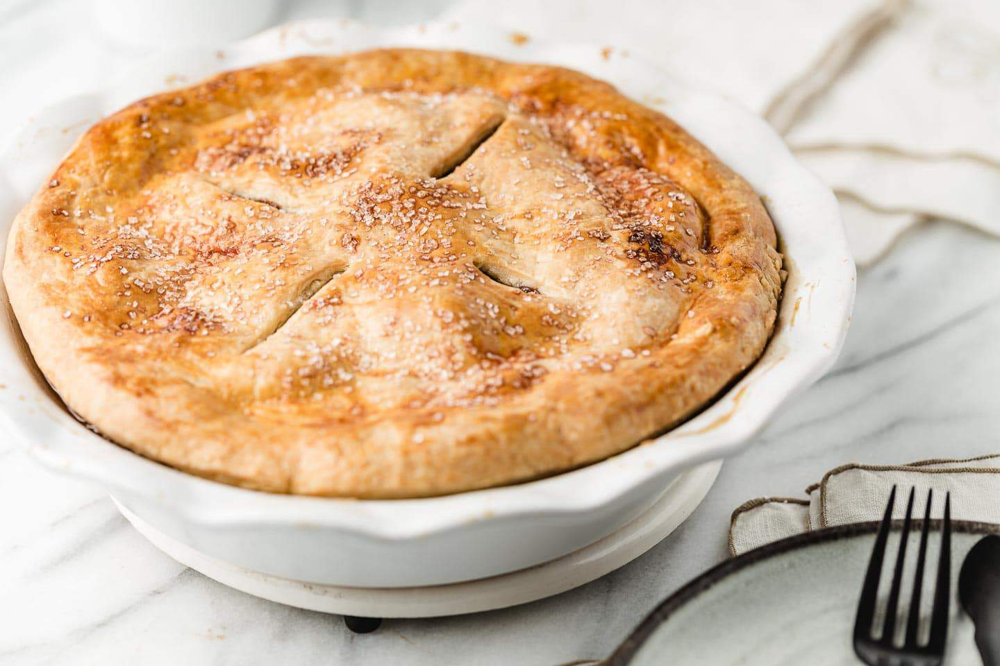

All Butter Pie Crust

This all butter pie crust recipe is made from scratch for the most tender and flaky pie crust ever!
Just follow these easy, step-by-step instructions for the perfect pie crust, every single time!
Duration
~15 min (+1 hour of chilling)
Ingredients
- 2 1/2 cups all-purpose flour
- 1 cup unsalted butter, cut into small cubes (cold)
- 1 teaspoon salt
- 1 teaspoon sugar
- 1/2 cup cold water (plus one ice cube)
- 2 teaspoons vinegar
Steps
- Prepare the water/vinegar mixture. Drop an ice-cube into a measuring cup and fill the measuring cup up with water to the ½ cup mark. Add 2 teaspoons of white vinegar and set aside.
- Mix Flour and Butter. Combine the dry ingredients together in a medium-sized bowl and toss with a fork to mix evenly. Use a pastry cutter to cut the butter into the flour until the mixture forms large, coarse crumbs.
- Add Water. Pour the water mixture, a few tablespoons at a time, into the flour/butter mixture and toss with a fork until the dough is evenly moist. Add water slowly to get the right texture.
- Gather the dough. Use your hands to quickly bring the dough together in the bowl. Do not over work the dough.
- Divide and Chill. Divide the dough in half and flatten into disks. Wrap the disks separately in plastic wrap and chill in the refrigerator for at least 1 hour.
- Bake according to what your pie recipe calls for.